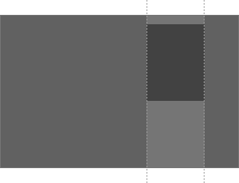
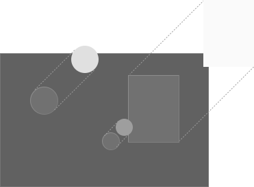

Посадочные страницы для «Мега-Талант»
Дистанционные олимпиады и конкурсы для школьников и учителей
mega-talant.comДистанционные олимпиады и конкурсы для школьников и учителей
mega-talant.comСтраница презентует новый сезон олимпиад и приглашает принять в нем участие. Посетители — уже знакомые с проектом учителя, а также новая аудитория. На странице представлены ответы на основные вопросы относительно мероприятий
Боковое меню с целевым действием двигается вместе с пользователем на протяжении всей страницы
Блок с наградами в отличии от остальной страницы на темном фоне, благодаря чему не отвлекает пользователя от контента. Оформление бокового меню также меняется соответственно фону
Предметы на фоне двигаются с эффектом паралакса, медленне чем основной контент, как бы находясь в разных слоях
Страница представляет пользователям сайта один из подпроектов «Мега-Талант», школу для современных педагогов.